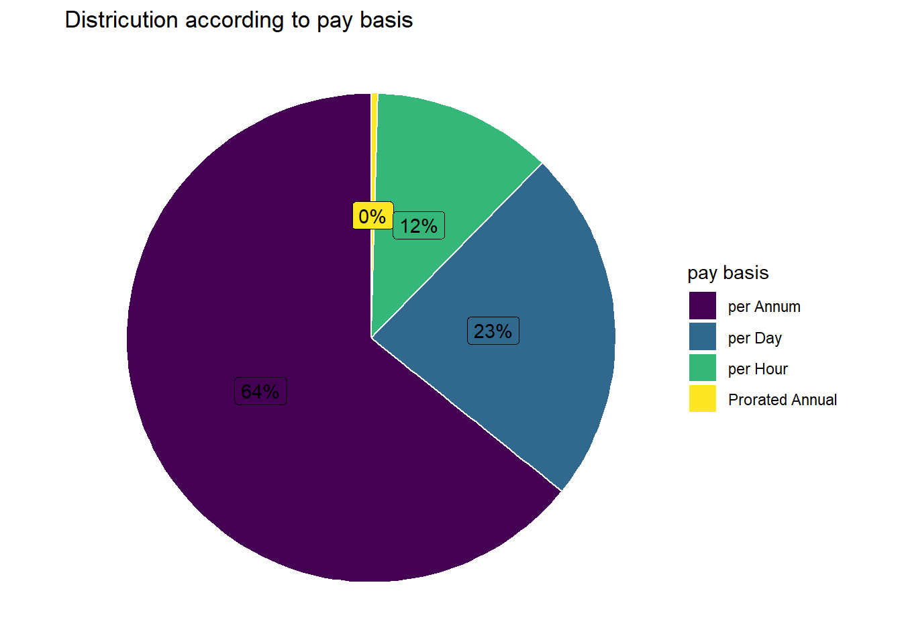
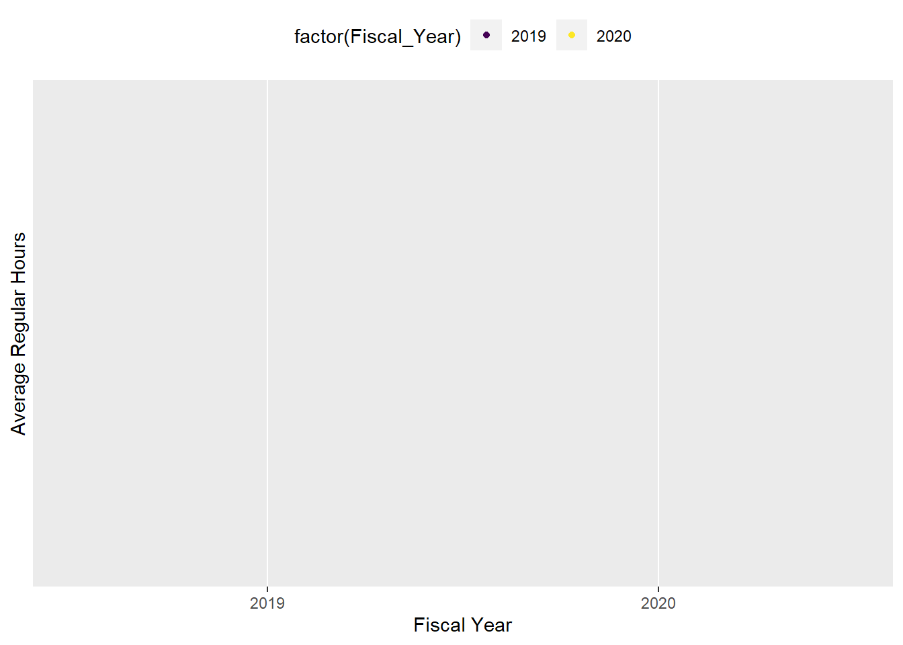
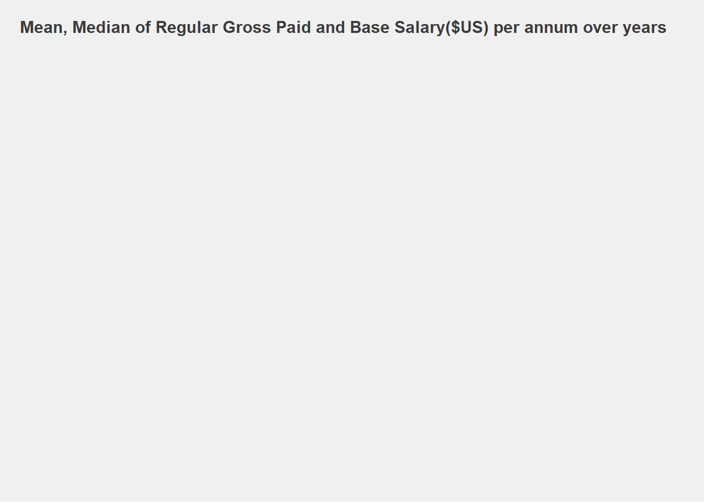
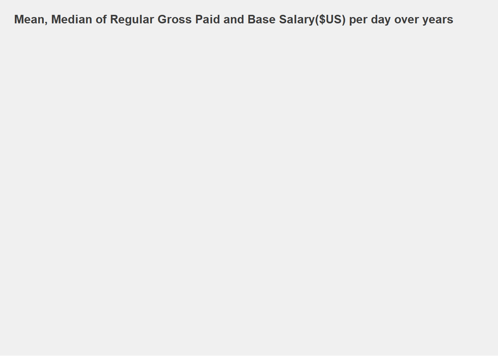

Payroll data analytics is the process where we are using payroll data and implementing data analytics to it that allows organizations to understand economic trends and patterns so they can make better decisions.It extends the capability of traditional payroll services by offering a different view into payroll information.It can also be used to eliminate errors and inefficiencies in payroll processes and to drive greater pay equality and fairness of compensation across companies.
For my research I collected data of NYC to visualize how the City’s budget is being spent on salary and overtime pay for all municipal employees. Data is input into the City’s Personnel Management System (“PMS”) by the respective user Agencies. Each record represents the following statistics for every city employee: Agency, Last Name, First Name, Middle Initial, Agency Start Date, Work Location Borough, Job Title Description, Leave Status as of the close of the FY (June 30th), Base Salary, Pay Basis, Regular Hours Paid, Regular Gross Paid, Overtime Hours worked, Total Overtime Paid,and Total Other Compensation (i.e. lump sum and/or retro payments). This data can be used to analyze how the City’s financial resources are allocated and how much of the City’s budget is being devoted to overtime. This data should be increments of salary increases received over the course of any one fiscal year will not be reflected. All that is captured, is the employee’s final base and gross salary at the end of the fiscal year.
Reaserch question
In this project I’m going to visualize the working hours, the hourly paid, total paid and how these dimensions change over different fiscal years in my final project. I will also find the following questions :
Pay over the years - Distribution Basis of Pay - Annual, Daily, Hourly
The Lowest Paying Job Titles - Annually, Daily & Hourly
Pay by Location Overtime Compensation
Data description
NYC Open Data website giving the public access to thousands of public datasets, which helps to learn about New York. https://data.cityofnewyork.us/City-Government/Citywide-Payroll-Data-Fiscal-Year-/k397-673e
Citywide Payroll Data (Fiscal Year) dataset is about salary and overtime payment of municipal employees. It aims to analyze how the city budgets have been used for payment. It could be also helpful for me to visualize the job market condition.
There are 2.36 million rows and 17 columns in the dataset. The dataset contains payroll records from 2019 through 2022,with the working location of New York City and other cities. It also includes the employees who are ceased as of June 30.
1.Fiscal Year : Financial year 2.Payroll Number : Unique number for every agency/employer 3.Agency Name : The Payroll agency that the employee works for
4.Last Name : Last name of employee 5.First Name : First name of employee 6.Middle Initial : Middle initial of employee 7.Agency Start Date : Date which employee began working for their current agency 8.Work Location Borough : Borough of employee’s primary work location 9.Title Description : Civil service title description of the employee 10.Leave Status as of Jun 30 : Status of employee as of the close of the relevant fiscal year: Active, Ceased,or On Leave 11.Base Salary : Base Salary assigned to the employee 12.Pay Basis : Lists whether the employee is paid on an hourly, per diem or annual basis 13.Regular Hours : Number of regular hours employee worked in the fiscal year 14.Regular Gross : Paid The amount paid to the employee for base salary during the fiscal year 15.OT Hours : Overtime Hours worked by employee in the fiscal year 16.Total OT Paid : Total overtime pay paid to the employee in the fiscal year 17.Total Other Pay : Includes any compensation in addition to gross salary and overtime pay, ie Differentials, lump sums, uniform allowance,meal allowance, retroactive pay increases, settlement amounts, and bonus pay, if applicable.
Step 1 : Reading data from csv file
NOTE : I deleted unused columns from the dataset due to large size of datafile as I am not able to push the code on Git.
spc_tbl_ [1,048,575 × 12] (S3: spec_tbl_df/tbl_df/tbl/data.frame)
$ Fiscal Year : num [1:1048575] 2019 2019 2019 2019 2019 ...
$ Agency Name : chr [1:1048575] "OFFICE OF THE MAYOR" "OFFICE OF THE MAYOR" "OFFICE OF THE MAYOR" "OFFICE OF THE MAYOR" ...
$ Agency Start Date : chr [1:1048575] "12/31/2017" "1/1/2014" "1/25/2016" "1/3/2017" ...
$ Work Location Borough: chr [1:1048575] "MANHATTAN" "MANHATTAN" "MANHATTAN" "MANHATTAN" ...
$ Title Description : chr [1:1048575] "FIRST DEPUTY MAYOR" "MAYOR" "DEPUTY MAYOR" "DEPUTY MAYOR" ...
$ Base Salary : num [1:1048575] 282659 258750 244643 244643 244643 ...
$ Pay Basis : chr [1:1048575] "per Annum" "per Annum" "per Annum" "per Annum" ...
$ Regular Hours : num [1:1048575] 1825 1825 1825 1825 1825 ...
$ Regular Gross Paid : num [1:1048575] 278980 258041 246125 246036 241461 ...
$ OT Hours : num [1:1048575] 0 0 0 0 0 0 0 0 0 0 ...
$ Total OT Paid : num [1:1048575] 0 0 0 0 0 0 0 0 0 0 ...
$ Total Other Pay : num [1:1048575] 0 500 0 0 0 0 0 1000 0 1000 ...
- attr(*, "spec")=
.. cols(
.. `Fiscal Year` = col_double(),
.. `Agency Name` = col_character(),
.. `Agency Start Date` = col_character(),
.. `Work Location Borough` = col_character(),
.. `Title Description` = col_character(),
.. `Base Salary` = col_double(),
.. `Pay Basis` = col_character(),
.. `Regular Hours` = col_double(),
.. `Regular Gross Paid` = col_double(),
.. `OT Hours` = col_double(),
.. `Total OT Paid` = col_double(),
.. `Total Other Pay` = col_double()
.. )
- attr(*, "problems")=<externalptr>
##Step 2: Data prepration
1.Convert character to lower case in the data for following columns (Agency Name,Last Name,First Name,Mid Init,Work Location Borough,Title Description,Leave Status as of June 30,Pay Basis) 2.Replace white spaces with underscore for column name 3.Convert Regular_Gross_Paid,Base_Salary,OT_Hours and Total_OT_Paid to numerical data 4.Calculate the start of employment Start_Date based on Agency_Start_Date 5.Create new column Total_pay which is addition of Total_OT_Paid + Regular_Gross_Paid 6.Remove duplicate rows
Code
#tolower, whitespaces removalNY_payroll[c(3,4,5,6,8,9,10,12)]<-map(NY_payroll[c(3,4,5,6,8,9,10,12)], tolower) # convert into lower casenames(NY_payroll) <-gsub(" ", "_", names(NY_payroll)) # remove spaces from column names#convert to numericNY_payroll[c(11,14,16,17)] <-lapply(NY_payroll[c(11,14,16,17)], function(x) as.numeric(gsub("\\$","",x)))
Error in `NY_payroll[c(11, 14, 16, 17)]`:
! Can't subset columns past the end.
ℹ Locations 14, 16, and 17 don't exist.
ℹ There are only 12 columns.
Code
#create Data columnsNY_payroll <- NY_payroll %>%add_column(region ="new york")NY_payroll$Start_Date<-as.Date(NY_payroll$Agency_Start_Date,format="%m/%d/%Y")NY_payroll$Start_Year<-as.numeric(format(NY_payroll$Start_Date,'%Y'))NY_payroll$Total_Pay<-NY_payroll$Total_OT_Paid + NY_payroll$Regular_Gross_Paid
Error in NY_payroll$Total_OT_Paid + NY_payroll$Regular_Gross_Paid: non-numeric argument to binary operator
When looking at the salary’s change (Regular_Gross_Paid) over time (or based on another feature), the mean and median over a given group will be used. However, this distribution might be skewed because of some other categories.
# A tibble: 10 × 4
Pay_Basis Regular_Hours Regular_Gross_Paid Total_Other_Pay
<chr> <chr> <chr> <chr>
1 per Annum 1825 278980.28 0
2 per Annum 1825 258041.16 500
3 per Annum 1825 246124.64 0
4 per Annum 1825 246035.81 0
5 per Annum 1825 241461.21 0
6 per Annum 1825 238149.78 0
7 per Annum 1825 237517.73 0
8 per Annum 1825 231522.96 1000
9 per Annum 1825 230755.36 0
10 per Annum 1825 222490.58 1000
# A tibble: 4 × 2
Pay_Basis count
<chr> <int>
1 per Annum 620443
2 per Day 226495
3 per Hour 114760
4 Prorated Annual 4306
Code
p2 <- NY_payroll %>%group_by(Pay_Basis) %>%# Variable to be transformedcount() %>%ungroup() %>%mutate(perc =`n`/sum(`n`)) %>%arrange(perc) %>%mutate(labels = scales::percent(perc)) %>%ggplot(aes(x ="", y = perc, fill = Pay_Basis)) +ggtitle("Districution according to pay basis") +geom_col(colour ="white") +geom_label(aes(label = labels),position =position_stack(vjust =0.5),show.legend =FALSE) +guides(fill =guide_legend(title ="pay basis")) +scale_fill_viridis_d() +coord_polar(theta ="y") +theme_void()p2

From the following bar plot, we see a distribution in terms of number of employee wrt to pay basis.
As we could see from the visualisation that, 59% employee is employed on per annum basis, 28% on per day basis and remaining on per day and prorated annual. Hence, we understand that 59% employee are permanent employees and remaining work as part time.
Also there are 2 types of salaries :
Base_Salary Regular_Gross_Paid
The difference between both is that Regular Gross Pay is the total amount of money you get before taxes or other deductions are subtracted from your salary, whereas Base.Salary is a fixed amount of money paid to an employee by an employer in return for work performed. Base salary does not include benefits, bonuses or any other potential compensation from an employer.
Error in `geom_density()`:
! Problem while computing aesthetics.
ℹ Error occurred in the 1st layer.
Caused by error in `FUN()`:
! object 'Total_Pay' not found
As we know that total pay is sum of Regular Pay and Total overtime pay. Now, we want to see how the total pay is distributed wrt to no. Of years using a density plot.
From the density plot, we observe that total pay is distributed from 0 to 200000, where the maximum or most frequent payment resides in first 12.5% of the data. The density plot looks right skewed. We see similar behaviour for all four years.
We already saw distribution plot and bar plot for the Total Pay and Pay Basis distribution. Now, if we want to see how many employee distributed across different pay ranges, we can use countplot function or frequency plot. The pay ranges are divided into 7 categories- (minm,0), (0,500), (500,1000), (1000,1500), (1500,2000), (2000,2500), (2500, maxm). We could see from following plot that maximum employees lies in (minm,0) amount. We see similar behavior in density plot where we asserted that maximum employees lies between 0 to 12.5% of total pay.
Average total pay for every fiscal year for different pay basis
Error in `summarise()`:
! Problem while computing `mean_total_pay = mean(Total_Pay)`.
Caused by error in `mean()`:
! object 'Total_Pay' not found
Code
p <-ggplot( dat1,aes(y =as.numeric(mean_total_pay), x =as.factor(Fiscal_Year), color =factor(Fiscal_Year), group =1)) +geom_point(size=1.5) +scale_color_viridis_d() +scale_linetype_manual() +labs(x ="Fiscal Year", y ="Average Total Pay", title ="Average Total Pay Vs Year (per annum basis)") +theme(legend.position ="top")
Error in ggplot(dat1, aes(y = as.numeric(mean_total_pay), x = as.factor(Fiscal_Year), : object 'dat1' not found
Code
p +geom_line(color='blue')
Error in `geom_line()`:
! Problem while setting up geom.
ℹ Error occurred in the 3rd layer.
Caused by error in `compute_geom_1()`:
! `geom_line()` requires the following missing aesthetics: y
Error in `summarise()`:
! Problem while computing `mean_total_pay = mean(Total_Pay)`.
Caused by error in `mean()`:
! object 'Total_Pay' not found
Code
p <-ggplot( dat1,aes(y =as.numeric(mean_total_pay), x =as.factor(Fiscal_Year), color =factor(Fiscal_Year), group =1)) +geom_point(size=1.5) +scale_color_viridis_d() +scale_linetype_manual() +labs(x ="Fiscal Year", y ="Average Total Pay", title ="Average Total Pay Vs Year (per day & per hour basis)") +theme(legend.position ="top")
Error in ggplot(dat1, aes(y = as.numeric(mean_total_pay), x = as.factor(Fiscal_Year), : object 'dat1' not found
Code
p +geom_line(color='blue')
Error in `geom_line()`:
! Problem while setting up geom.
ℹ Error occurred in the 3rd layer.
Caused by error in `compute_geom_1()`:
! `geom_line()` requires the following missing aesthetics: y
From the dataset, we could see that we have two different types of pay basis - permanent work pay and temporary work pay. For this, we can find average total pay vs year plot for different pay basis. We can see from the above two plots that Average Total Pay was maximum on 2019 for ‘per annum’ basis and for ‘per day & per hour’ basis on 2022. Similarly, we see that Average Total Pay was minimum on 2020 for ‘per annum’ basis and for ‘per day & per hour’ basis on 2021. This information could useful if we want to find more information on pay average per year for different types of job.
Average working hours for different years :
If we want to see how average working hours for different years looks like, we could use a scatter plot to deduce a relationship between average working hours and fiscal year. From below plot, we could see that, the average working hour increased from 2019 to 2020 and then remain constant for 2021. However, it declined during 2022. There could be multiple unwarranted reasons for this trend which could be deduced from the given plot.
Code
dat1 = NY_payroll%>%na.omit() %>%group_by(Fiscal_Year) %>%summarise(Mean_Regular_Hours =mean(Regular_Hours))p <-ggplot( dat1,aes(y =as.numeric(Mean_Regular_Hours), x =as.factor(Fiscal_Year), color =factor(Fiscal_Year), group =1)) +geom_point(size=1.5) +scale_color_viridis_d() +scale_linetype_manual() +labs(x ="Fiscal Year", y ="Average Regular Hours") +theme(legend.position ="top")p +geom_line(color='blue')

Code
NY_payroll %>% dplyr::filter(Pay_Basis=='per annum') %>%group_by(Fiscal_Year) %>%summarise(meanPaid =mean(Regular_Gross_Paid),meanBaseSalary =mean(Base_Salary),medianPaid =median(Regular_Gross_Paid),medianBaseSalary =median(Base_Salary)) %>% reshape2::melt(id=c('Fiscal_Year')) %>%ggplot(aes(x=factor(Fiscal_Year),y=value,group=variable)) +geom_line(aes(color=variable),size=2,alpha=.5) +geom_point(size=1.5) +scale_color_manual(name="",values =c("green","orange","darkred","red")) +theme_fivethirtyeight() +ggtitle('Mean, Median of Regular Gross Paid and Base Salary($US) per annum over years') +theme(plot.title =element_text(size =12))

Code
NY_payroll %>% dplyr::filter(Pay_Basis=='per hour') %>%group_by(Fiscal_Year) %>%summarise(meanPaid =mean(Regular_Gross_Paid),meanBaseSalary =mean(Base_Salary),medianPaid =median(Regular_Gross_Paid),medianBaseSalary =median(Base_Salary)) %>% reshape2::melt(id=c('Fiscal_Year')) %>%ggplot(aes(x=factor(Fiscal_Year),y=value,group=variable)) +geom_line(aes(color=variable),size=2,alpha=.5) +geom_point(size=1.5) +scale_color_manual(name="",values =c("green","orange","blue","red")) +theme_fivethirtyeight() +ggtitle('Mean, Median of Regular Gross Paid and Base Salary($US) per day over years') +theme(plot.title =element_text(size =12) )

To see the statistical analysis of our salary data we could see the mean and median distribution. We know from statistics that if the mean is greater than median than we have right skewed that else we have a left skewed data in vice versa. From the below plot we see, that for all years, the mean is higher than the median suggesting the distribution is right skewed. Now, if we see our distribution plot, we mentioned that the distribution is right skewed. Hence, we explain the distribution plot using statistics.
Now, if we see the trend for the different years from 2019-2022. The mean is increasing from 2019 to 2022 suggesting that the salary of the employee has been increased. However, if we see the median which first decreased for year 2020 and then increased for 2021 and finally decreased for 2022, suggesting that salary increment is not consistent over the years. Now, comparing both mean and median together we could assert that for year 2020, the salary is increased only for few population on the higher end of the distribution, leading to lower median and higher mean. Now for year 2021, the result suggests that salary has been increased for more larger population as compared to previous year, concluding increase in median along with mean.We see that the median is greater than mean for 2021 suggested that data is left skewed. Finally for year 2022, again we see the similar trend as 2020, that salary has been increased but only for few population leading to lesser median and higher mean.
For the per hour median and mean of Regular Gross Pay and Base Salary, the gross pay is the highest in the mean and larger than the median suggesting that there is non-uniformity in the data. Few employees have high hourly pay (possible outliers) causing the difference with median gross pay. The base salary suggests that its not applicable to 50% of the employees as median is tending towards zero and mean pay pretty large than median suggesting few population have large hourly base salary causing higher base salary.
Error in mutate(., Agency_Name = fct_reorder(Agency_Name, desc(Mean_Total_Pay))): object 'newdata' not found
Suppose, if want to see how the total pay is distributed across different agencies for per annum basis. We could use following plot. Now, from the result we see that, maximum total pay is for Agency “Queens community board #14” and minimum total pay is for Agency “Queens community board #8”. Thus, if we sort the Agency wrt total pay, then we can comment that which agencies pay higher or lower. This information can help us to understand about a popularity of the agency or other analysis.
Error in mutate(., Agency_Name = fct_reorder(Agency_Name, desc(Mean_Total_Pay))): object 'newdata' not found
Now, if want to see how the total pay is distributed across different agencies for per day basis. We could use above plot. Now, from the result we see that, maximum total pay is for Agency “Dept of citywide admin svcs” and minimum total pay is for Agency “Department of juvenile justice”. Thus, if we sort the Agency wrt total pay, then we can comment that which agencies pay higher or lower.
Error in mutate(., Agency_Name = fct_reorder(Agency_Name, desc(Mean_Total_Pay))): object 'newdata' not found
Now, if want to see how the total pay is distributed across different agencies for per hour basis. We could use above plot. Now, from the result we see that, maximum total pay is for Agency “Civil services commission” and minimum total pay is for Agency “Bronx community board #10”. Thus, if we sort the Agency wrt total pay, then we can comment that which agencies pay higher or lower.
Jobs Title that pay the Most & Least money in NYC
Now, we do same analysis for ‘Job Title’ which we did in the previous section. We want to find which job title has maximum or minimum average total pay for different pay basis. We used bar plot for descending or ascending average total pay for our analysis.
Error in mutate(., Title_Description = fct_reorder(Title_Description, : object 'newdata' not found
Average pay by Location
Work Location Borough tells us the area that a particular agency in NYC belongs to so it is interesting to know which one of these areas have the highest pay!
Code
# Using number of observation per groupfunc <-function(x) sprintf("%d", x)plot <- NY_payroll %>%na.omit() %>%ggplot(aes(x = Work_Location_Borough, y = Total_Pay)) +stat_boxplot(geom ="errorbar", # Boxplot with error bars width =0.2) +geom_boxplot(fill ='green', colour ="blue", # Colorsalpha =0.9, outlier.colour ="red") +scale_y_continuous(name ="Total Pay", labels = func) +# Continuous variable labelscale_x_discrete(name ="Work Location Borough") +# Group labelggtitle("Boxplot by Work Location Borough") +# Plot titletheme(axis.line =element_line(colour ="black", # Theme customizationsize =0.25), axis.text.y =element_text(size =8 ))plot
Error in `stat_boxplot()`:
! Problem while computing aesthetics.
ℹ Error occurred in the 1st layer.
Caused by error in `FUN()`:
! object 'Total_Pay' not found
In order to find out the total pay distribution wrt location, we could use box plot distribution for Total Pay VS Location plot. Now, if we the box plot, then for most of the locations we see there are outliers in the data suggesting that total pay have extreme values I.e few employees have relevantly more total pay than remaining. Moreover, if we compare among different locations, then we could see that Washington have higher median than others suggesting that we have more uniformity in the total pay as compared to other locations. However, if we want to find out which location has higher pay than we see that Manhattan has higher pay as compared to because of outliers. Also, if we see that most of the box plot are either right or left skewed with outliers suggesting non uniformity in the total pay distribution. However, for few cities like Ulster, Westchester, Duchess etc looks to have normal distribution suggesting uniform pay distribution. Therefore, we can comment on the uniformity of pay distribution or average pay distribution or city with higher or lower pay distribution using box plot.
Agency name which has highest overtime hours and over time salary :
When we deal with payroll data, our one of the primary point of interest is overtime payment. Therefore, we want to deduce a relationship between ‘Agency Name’ and ‘overtime’ hours or payment.
From the above graph, we see that the ‘fire department’ has the most overtime working hours followed by ‘board of election’ than ‘department of correction’ as top 3 agencies with overtime working hours.
From the above plot, average overtime payment is displayed against different agencies. We have sorted our data in descending order to capture the maximum overtime payment. We see that ‘fire department’ followed by ‘department of sanitation’ than ‘department of correction’.
Distribution of average total payment based on new york counties for different years
Finally, we could use ‘New York’ map to show the distribution of average total pay across all counties. We used theme_map() for ‘new york’ state and used light shade to display lower total pay and darker shade for higher total pay for all fiscal years. This map plot gives visual idea of maximum and minimum average pay for a location which more descriptive on comparison to bar that could be used in place of bar plot for same relationship.
We see that the same county has darker shade and light shade across all fiscal years. Thus, suggesting that these are high paying areas with better jobs. However, we might need more evidence to corroborate our statement.
Code
ny_counties <-map_data('county') %>%as.data.frame() %>%filter(region =='new york')NY_payroll %>%filter(Fiscal_Year==2019& region =="new york") %>%group_by(region, subregion =tolower(Work_Location_Borough)) %>% dplyr::summarise(mean_total_pay =mean(Total_Pay, na.rm =TRUE)) %>%right_join(ny_counties, by =c('region', 'subregion')) %>%ggplot(aes(x = long, y = lat, group = group, fill = mean_total_pay)) +geom_polygon() +geom_path(color ='white', size =0.1) +scale_fill_continuous(low ="orange", high ="darkred",name ='Total Pay (dollar)') +theme_map() +theme() +coord_map('albers', lat0=30, lat1=40) +ggtitle(paste0("Average Total Pay for NY Employees for 2019")) +theme(plot.title =element_text(hjust =0.5))
Error in `dplyr::summarise()`:
! Problem while computing `mean_total_pay = mean(Total_Pay, na.rm =
TRUE)`.
ℹ The error occurred in group 1: region = "new york", subregion = "albany".
Caused by error in `mean()`:
! object 'Total_Pay' not found
Code
ny_counties <-map_data('county') %>%as.data.frame() %>%filter(region =='new york') NY_payroll %>%filter(Fiscal_Year==2020& region =="new york") %>%group_by(region, subregion =tolower(Work_Location_Borough)) %>%summarize(mean_total_pay =mean(Total_Pay, na.rm =TRUE)) %>%right_join(ny_counties, by =c('region', 'subregion')) %>%ggplot(aes(x = long, y = lat, group = group, fill = mean_total_pay)) +geom_polygon() +geom_path(color ='white', size =0.1) +scale_fill_continuous(low ="blue", high ="darkred",name ='Total Pay (dollar)') +theme_map() +theme() +coord_map('albers', lat0=30, lat1=40) +ggtitle(paste0("Average Total Pay for NY Employees for 2020")) +theme(plot.title =element_text(hjust =0.5))
Error in `summarize()`:
! Problem while computing `mean_total_pay = mean(Total_Pay, na.rm =
TRUE)`.
ℹ The error occurred in group 1: region = "new york", subregion = "albany".
Caused by error in `mean()`:
! object 'Total_Pay' not found
Code
ny_counties <-map_data('county') %>%as.data.frame() %>%filter(region =='new york') NY_payroll %>%filter(Fiscal_Year==2021& region =="new york") %>%group_by(region, subregion =tolower(Work_Location_Borough)) %>%summarize(mean_total_pay =mean(Total_Pay, na.rm =TRUE)) %>%right_join(ny_counties, by =c('region', 'subregion')) %>%ggplot(aes(x = long, y = lat, group = group, fill = mean_total_pay)) +geom_polygon() +geom_path(color ='white', size =0.1) +scale_fill_continuous(low ="green", high ="red",name ='Total Pay (dollar)') +theme_map() +theme() +coord_map('albers', lat0=30, lat1=40) +ggtitle(paste0("Average Total Pay for NY Employees for 2021")) +theme(plot.title =element_text(hjust =0.5))
Error in `summarize()`:
! Problem while computing `mean_total_pay = mean(Total_Pay, na.rm =
TRUE)`.
Caused by error in `mean()`:
! object 'Total_Pay' not found
Code
ny_counties <-map_data('county') %>%as.data.frame() %>%filter(region =='new york') NY_payroll %>%filter(Fiscal_Year==2022& region =="new york") %>%group_by(region, subregion =tolower(Work_Location_Borough)) %>%summarize(mean_total_pay =mean(Total_Pay, na.rm =TRUE)) %>%right_join(ny_counties, by =c('region', 'subregion')) %>%ggplot(aes(x = long, y = lat, group = group, fill = mean_total_pay)) +geom_polygon() +geom_path(color ='white', size =0.1) +scale_fill_continuous(low ="pink", high ="purple",name ='Total Pay (dollar)') +theme_map() +theme() +coord_map('albers', lat0=30, lat1=40) +ggtitle(paste0("Average Total Pay for NY Employees for 2022")) +theme(plot.title =element_text(hjust =0.5))
Error in `summarize()`:
! Problem while computing `mean_total_pay = mean(Total_Pay, na.rm =
TRUE)`.
Caused by error in `mean()`:
! object 'Total_Pay' not found
Conclusions :
Throughout this project, we used different visualizations techniques using ggplot library to demonstrate the different data behaviors. We used ‘NYC Payroll’ dataset from which we explained overall pay distribution across different agencies, regions and pay basis types. We used pie chart, bar plot, box plot, distribution curve, line plot, theme map etc, for our overall data analysis. The choice of plot was picked based on the nature of the data and the analysis we wanted to deduce.
From the above analysis, we saw how the working hours, per basis type, total payment and average total pay varies with fiscal year or agencies type. We also saw statistical analysis using mean and median of salaries wrt fiscal year to see the trend on the increment of total pay over the years. Furthermore, we saw the agency which pays most and least overtime salary and the agency which have maximum overtime hours. These are important aspects when we see payment data. Lastly, we used ‘New York’ state map to display the Total Payment distribution across different counties. Therefore, we explained how using different data visualizations we can explain the data and its behavior.
Further thoughts :
In this project, I added all possible visualizations which could be interpreted from the dataset. The data contains information about NYC payroll. Hence, columns like total pay, gross pay, special allowance, counties, job types, job title, payment basis, overtime hours etc. create meaningful significance. I tried to use different plots which I felt explains the data property more closely than any other plot. The map plot where I showed the distribution between average total pay and counites could be improved. We could add more information like county name and data set could include all county information for diverse results. Overall I feel that I explained the dataset with loads of data visualisation tools to explain the trend, behavior and relationship between two or multiple variables.
---title: "Final Project"author: "Niyati Sharma"desription: "Visualizing the NYC Payroll"date: "12/21/2022"format: html: toc: true code-fold: true code-copy: true code-tools: truecategories: - final project - Niyati Sharmaeditor: markdown: wrap: 72---```{r}#| label: setup#| warning: falselibrary(gganimate)library(hrbrthemes)library(gender)library(tidyr)library(viridis)library(tidyverse)library(dplyr)library(ggplot2)library(cowplot)library(ggplot2)library(dplyr)library(gridExtra)library(ggthemes)library(RColorBrewer)#install.packages("remotes")# library(genderdata)library(ggjoy)library(readxlsb)# load("Final_project_NiyatiSharma.RData")knitr::opts_chunk$set(echo =TRUE, warning=FALSE, message=FALSE)```## IntroductionPayroll data analytics is the process where we are using payroll data and implementing data analytics to it that allows organizations to understand economic trends and patterns so they can make better decisions.It extends the capability of traditional payroll services by offering a different view into payroll information.It can also be used to eliminate errors and inefficiencies in payroll processes and to drive greater pay equality and fairness of compensation across companies.For my research I collected data of NYC to visualize how the City's budget is being spent on salary and overtime pay for all municipal employees. Data is input into the City's Personnel Management System ("PMS") by the respective user Agencies. Each record represents the following statistics for every city employee: Agency, Last Name, First Name, Middle Initial, Agency Start Date, Work Location Borough, Job Title Description, Leave Status as of the close of the FY (June 30th), Base Salary, Pay Basis, Regular Hours Paid, Regular Gross Paid, Overtime Hours worked, Total Overtime Paid,and Total Other Compensation (i.e. lump sum and/or retro payments). This data can be used to analyze how the City's financial resources are allocated and how much of the City's budget is being devoted to overtime. This data should be increments of salary increases received over the course of any one fiscal year will not be reflected. All that is captured, is the employee's final base and gross salary at the end of the fiscal year.## Reaserch questionIn this project I’m going to visualize the working hours, the hourly paid, total paid and how these dimensions change over different fiscal years in my final project. I will also find the following questions : 1. Pay over the years - Distribution Basis of Pay - Annual, Daily, Hourly2. Highest & the Lowest Paying Agencies - Annually, Daily & Hourly Highest3. The Lowest Paying Job Titles - Annually, Daily & Hourly 4. Pay by Location Overtime Compensation## Data descriptionNYC Open Data website giving the public access to thousands of public datasets, which helps to learn about New York.https://data.cityofnewyork.us/City-Government/Citywide-Payroll-Data-Fiscal-Year-/k397-673eCitywide Payroll Data (Fiscal Year) dataset is about salary and overtime payment of municipal employees. It aims to analyze how the city budgets have been used for payment. It could be also helpful for me to visualize the job market condition. There are 2.36 million rows and 17 columns in the dataset. The dataset contains payroll records from 2019 through 2022,with the working location of New York City and other cities. It also includes the employees who are ceased as of June 30. 1.Fiscal Year : Financial year2.Payroll Number : Unique number for every agency/employer3.Agency Name : The Payroll agency that the employee works for 4.Last Name : Last name of employee 5.First Name : First name of employee 6.Middle Initial : Middle initial of employee 7.Agency Start Date : Date which employee began working for their current agency 8.Work Location Borough : Borough of employee's primary work location 9.Title Description : Civil service title description of the employee 10.Leave Status as of Jun 30 : Status of employee as of the close of the relevant fiscal year: Active, Ceased,or On Leave 11.Base Salary : Base Salary assigned to the employee 12.Pay Basis : Lists whether the employee is paid on an hourly, per diem or annual basis 13.Regular Hours : Number of regular hours employee worked in the fiscal year 14.Regular Gross : Paid The amount paid to the employee for base salary during the fiscal year15.OT Hours : Overtime Hours worked by employee in the fiscal year16.Total OT Paid : Total overtime pay paid to the employee in the fiscal year 17.Total Other Pay : Includes any compensation in addition to gross salary and overtime pay, ie Differentials, lump sums, uniform allowance,meal allowance, retroactive pay increases, settlement amounts, and bonus pay, if applicable.## Step 1 : Reading data from csv fileNOTE : I deleted unused columns from the dataset due to large size of datafile as I am not able to push the code on Git. ```{r}NY_payroll <-read_csv("_data/Citywide_Payroll_Data__Fiscal_Year_ 2019-22.csv")str(NY_payroll)```##Step 2: Data prepration1.Convert character to lower case in the data for following columns (Agency Name,Last Name,First Name,Mid Init,Work Location Borough,Title Description,Leave Status as of June 30,Pay Basis)2.Replace white spaces with underscore for column name 3.Convert Regular_Gross_Paid,Base_Salary,OT_Hours and Total_OT_Paid to numerical data 4.Calculate the start of employment Start_Date based on Agency_Start_Date 5.Create new column Total_pay which is addition of Total_OT_Paid + Regular_Gross_Paid 6.Remove duplicate rows```{r}#tolower, whitespaces removalNY_payroll[c(3,4,5,6,8,9,10,12)]<-map(NY_payroll[c(3,4,5,6,8,9,10,12)], tolower) # convert into lower casenames(NY_payroll) <-gsub(" ", "_", names(NY_payroll)) # remove spaces from column names#convert to numericNY_payroll[c(11,14,16,17)] <-lapply(NY_payroll[c(11,14,16,17)], function(x) as.numeric(gsub("\\$","",x)))#create Data columnsNY_payroll <- NY_payroll %>%add_column(region ="new york")NY_payroll$Start_Date<-as.Date(NY_payroll$Agency_Start_Date,format="%m/%d/%Y")NY_payroll$Start_Year<-as.numeric(format(NY_payroll$Start_Date,'%Y'))NY_payroll$Total_Pay<-NY_payroll$Total_OT_Paid + NY_payroll$Regular_Gross_PaidNY_payroll<-NY_payroll[!duplicated(NY_payroll),]head(NY_payroll)```When looking at the salary's change (Regular_Gross_Paid) over time (or based on another feature), the mean and median over a given group will be used. However, this distribution might be skewed because of some other categories.```{r}NY_payroll %>%select(Pay_Basis,Regular_Hours,Regular_Gross_Paid,Total_Other_Pay) %>%head(10)```There are 4 types of Pay Basis :```{r}NY_payroll %>% dplyr::group_by(Pay_Basis) %>%summarize(count=n())p2 <- NY_payroll %>%group_by(Pay_Basis) %>%# Variable to be transformedcount() %>%ungroup() %>%mutate(perc =`n`/sum(`n`)) %>%arrange(perc) %>%mutate(labels = scales::percent(perc)) %>%ggplot(aes(x ="", y = perc, fill = Pay_Basis)) +ggtitle("Districution according to pay basis") +geom_col(colour ="white") +geom_label(aes(label = labels),position =position_stack(vjust =0.5),show.legend =FALSE) +guides(fill =guide_legend(title ="pay basis")) +scale_fill_viridis_d() +coord_polar(theta ="y") +theme_void()p2```From the following bar plot, we see a distribution in terms of number of employee wrt to pay basis. As we could see from the visualisation that, 59% employee is employed on per annum basis, 28% on per day basis and remaining on per day and prorated annual. Hence, we understand that 59% employee are permanent employees and remaining work as part time.Also there are 2 types of salaries :Base_Salary Regular_Gross_PaidThe difference between both is that Regular Gross Pay is the total amount of money you get before taxes or other deductions are subtracted from your salary, whereas Base.Salary is a fixed amount of money paid to an employee by an employer in return for work performed. Base salary does not include benefits, bonuses or any other potential compensation from an employer.```{r, fig.width = 10}NY_payroll$Fiscal_Year <-as.factor(NY_payroll$Fiscal_Year)func <-function(x) sprintf("%0.5f", x)plot <-ggplot(data=NY_payroll, aes(x=Total_Pay, group=Fiscal_Year, fill=Fiscal_Year)) +geom_density(adjust=1.5, alpha=.4) +theme_ipsum()plot +scale_y_continuous(labels = func) +scale_x_continuous(labels = func)```As we know that total pay is sum of Regular Pay and Total overtime pay. Now, we want to see how the total pay is distributed wrt to no. Of years using a density plot. From the density plot, we observe that total pay is distributed from 0 to 200000, where the maximum or most frequent payment resides in first 12.5% of the data. The density plot looks right skewed. We see similar behaviour for all four years.## Working hours```{r,fig.height=7}func <-function(x) sprintf("%d", x)NY_payroll$Regular_Hours_categories <-cut(as.numeric(NY_payroll$Regular_Hours), c(min(NY_payroll$Regular_Hours),0,500,1000,1500,2000,2500,max(NY_payroll$Regular_Hours)), labels =c(1:7), include.lowest =TRUE)#NY_payroll$Regular_Hours_categories <- as.factor(NY_payroll$Regular_Hours)p <-ggplot(data=NY_payroll, aes(x=Regular_Hours_categories, fill=Regular_Hours_categories)) +geom_bar() +geom_text(stat='count', aes(label=..count..), vjust=-1,size=7)+theme(text =element_text(size=17))p```We already saw distribution plot and bar plot for the Total Pay and Pay Basis distribution. Now, if we want to see how many employee distributed across different pay ranges, we can use countplot function or frequency plot. The pay ranges are divided into 7 categories- (minm,0), (0,500), (500,1000), (1000,1500), (1500,2000), (2000,2500), (2500, maxm). We could see from following plot that maximum employees lies in (minm,0) amount. We see similar behavior in density plot where we asserted that maximum employees lies between 0 to 12.5% of total pay.## Average total pay for every fiscal year for different pay basis```{r}dat1 = NY_payroll%>%na.omit() %>%filter( Pay_Basis=='per annum') %>%group_by(Fiscal_Year) %>%summarise(mean_total_pay =mean(Total_Pay))p <-ggplot( dat1,aes(y =as.numeric(mean_total_pay), x =as.factor(Fiscal_Year), color =factor(Fiscal_Year), group =1)) +geom_point(size=1.5) +scale_color_viridis_d() +scale_linetype_manual() +labs(x ="Fiscal Year", y ="Average Total Pay", title ="Average Total Pay Vs Year (per annum basis)") +theme(legend.position ="top")p +geom_line(color='blue')``````{r}dat1 = NY_payroll%>%na.omit() %>%filter( Pay_Basis=='per hour'| Pay_Basis=='per day') %>%group_by(Fiscal_Year) %>%summarise(mean_total_pay =mean(Total_Pay))p <-ggplot( dat1,aes(y =as.numeric(mean_total_pay), x =as.factor(Fiscal_Year), color =factor(Fiscal_Year), group =1)) +geom_point(size=1.5) +scale_color_viridis_d() +scale_linetype_manual() +labs(x ="Fiscal Year", y ="Average Total Pay", title ="Average Total Pay Vs Year (per day & per hour basis)") +theme(legend.position ="top")p +geom_line(color='blue')```From the dataset, we could see that we have two different types of pay basis - permanent work pay and temporary work pay. For this, we can find average total pay vs year plot for different pay basis. We can see from the above two plots that Average Total Pay was maximum on 2019 for 'per annum' basis and for 'per day & per hour' basis on 2022. Similarly, we see that Average Total Pay was minimum on 2020 for 'per annum' basis and for 'per day & per hour' basis on 2021. This information could useful if we want to find more information on pay average per year for different types of job.## Average working hours for different years :If we want to see how average working hours for different years looks like, we could use a scatter plot to deduce a relationship between average working hours and fiscal year. From below plot, we could see that, the average working hour increased from 2019 to 2020 and then remain constant for 2021. However, it declined during 2022. There could be multiple unwarranted reasons for this trend which could be deduced from the given plot.```{r}dat1 = NY_payroll%>%na.omit() %>%group_by(Fiscal_Year) %>%summarise(Mean_Regular_Hours =mean(Regular_Hours))p <-ggplot( dat1,aes(y =as.numeric(Mean_Regular_Hours), x =as.factor(Fiscal_Year), color =factor(Fiscal_Year), group =1)) +geom_point(size=1.5) +scale_color_viridis_d() +scale_linetype_manual() +labs(x ="Fiscal Year", y ="Average Regular Hours") +theme(legend.position ="top")p +geom_line(color='blue')``````{r}NY_payroll %>% dplyr::filter(Pay_Basis=='per annum') %>%group_by(Fiscal_Year) %>%summarise(meanPaid =mean(Regular_Gross_Paid),meanBaseSalary =mean(Base_Salary),medianPaid =median(Regular_Gross_Paid),medianBaseSalary =median(Base_Salary)) %>% reshape2::melt(id=c('Fiscal_Year')) %>%ggplot(aes(x=factor(Fiscal_Year),y=value,group=variable)) +geom_line(aes(color=variable),size=2,alpha=.5) +geom_point(size=1.5) +scale_color_manual(name="",values =c("green","orange","darkred","red")) +theme_fivethirtyeight() +ggtitle('Mean, Median of Regular Gross Paid and Base Salary($US) per annum over years') +theme(plot.title =element_text(size =12))``````{r}NY_payroll %>% dplyr::filter(Pay_Basis=='per hour') %>%group_by(Fiscal_Year) %>%summarise(meanPaid =mean(Regular_Gross_Paid),meanBaseSalary =mean(Base_Salary),medianPaid =median(Regular_Gross_Paid),medianBaseSalary =median(Base_Salary)) %>% reshape2::melt(id=c('Fiscal_Year')) %>%ggplot(aes(x=factor(Fiscal_Year),y=value,group=variable)) +geom_line(aes(color=variable),size=2,alpha=.5) +geom_point(size=1.5) +scale_color_manual(name="",values =c("green","orange","blue","red")) +theme_fivethirtyeight() +ggtitle('Mean, Median of Regular Gross Paid and Base Salary($US) per day over years') +theme(plot.title =element_text(size =12) )```To see the statistical analysis of our salary data we could see the mean and median distribution. We know from statistics that if the mean is greater than median than we have right skewed that else we have a left skewed data in vice versa. From the below plot we see, that for all years, the mean is higher than the median suggesting the distribution is right skewed. Now, if we see our distribution plot, we mentioned that the distribution is right skewed. Hence, we explain the distribution plot using statistics.Now, if we see the trend for the different years from 2019-2022. The mean is increasing from 2019 to 2022 suggesting that the salary of the employee has been increased. However, if we see the median which first decreased for year 2020 and then increased for 2021 and finally decreased for 2022, suggesting that salary increment is not consistent over the years. Now, comparing both mean and median together we could assert that for year 2020, the salary is increased only for few population on the higher end of the distribution, leading to lower median and higher mean. Now for year 2021, the result suggests that salary has been increased for more larger population as compared to previous year, concluding increase in median along with mean.We see that the median is greater than mean for 2021 suggested that data is left skewed. Finally for year 2022, again we see the similar trend as 2020, that salary has been increased but only for few population leading to lesser median and higher mean.For the `per hour` median and mean of Regular Gross Pay and Base Salary, the gross pay is the highest in the mean and larger than the median suggesting that there is non-uniformity in the data. Few employees have high hourly pay (possible outliers) causing the difference with median gross pay. The base salary suggests that its not applicable to 50% of the employees as median is tending towards zero and mean pay pretty large than median suggesting few population have large hourly base salary causing higher base salary. ## Highest & the Lowest Paying Agencies# Pay by Annum```{r, fig.width = 7}dat1 = NY_payroll %>%filter(Pay_Basis=='per annum') %>%na.omit() %>%group_by(Agency_Name) %>%summarise(Mean_Total_Pay =mean(Total_Pay))newdata <- dat1[order(dat1$Mean_Total_Pay, decreasing =FALSE),]newdata <- newdata[0:10,]newdata %>%mutate(Agency_Name =fct_reorder(Agency_Name, Mean_Total_Pay)) %>%ggplot( aes(y =as.numeric(Mean_Total_Pay), x =as.factor(Agency_Name),fill=Agency_Name), size =3) +geom_bar(stat='identity',width=0.3,size=.2,color='blue') +theme_fivethirtyeight() +theme(axis.text.y=element_text(size=6.6), axis.text.x=element_text(angle=90,size=6), legend.text =element_text(size=5), legend.key.size =unit(4, "mm"))``````{r,fig.width=10}func <-function(x) sprintf("%d", x)dat1 = NY_payroll %>%filter(Pay_Basis=='per annum') %>%na.omit() %>%group_by(Agency_Name) %>%summarise(Mean_Total_Pay =mean(Total_Pay))newdata <- dat1[order(dat1$Mean_Total_Pay, decreasing =TRUE),]newdata <- newdata[0:10,]newdata %>%mutate(Agency_Name =fct_reorder(Agency_Name, desc(Mean_Total_Pay))) %>%ggplot( aes(y =as.numeric(Mean_Total_Pay), x =as.factor(Agency_Name),fill=Agency_Name), size =3) +geom_bar(stat='identity',width=0.3,size=.2,color='blue') +theme_fivethirtyeight() +scale_y_continuous(labels = func) +theme(axis.text.y=element_text(size=8), axis.text.x=element_text(angle=90,size=8), legend.text =element_text(size=5), legend.key.size =unit(4, "mm")) ```Suppose, if want to see how the total pay is distributed across different agencies for `per annum` basis. We could use following plot. Now, from the result we see that, maximum total pay is for Agency “Queens community board #14” and minimum total pay is for Agency “Queens community board #8”. Thus, if we sort the Agency wrt total pay, then we can comment that which agencies pay higher or lower. This information can help us to understand about a popularity of the agency or other analysis.# Pay by Day```{r, fig.width = 7}dat1 = NY_payroll %>%filter(Pay_Basis=='per day') %>%na.omit() %>%group_by(Agency_Name) %>%summarise(Mean_Total_Pay =mean(Total_Pay))newdata <- dat1[order(dat1$Mean_Total_Pay, decreasing =FALSE),]newdata <- newdata[0:10,]newdata %>%mutate(Agency_Name =fct_reorder(Agency_Name, Mean_Total_Pay)) %>%ggplot( aes(y =as.numeric(Mean_Total_Pay), x =as.factor(Agency_Name),fill=Agency_Name), size =3) +geom_bar(stat='identity',width=0.3,size=.2,color='blue') +theme_fivethirtyeight() +theme(axis.text.y=element_text(size=6.6), axis.text.x=element_text(angle=90,size=6), legend.text =element_text(size=5), legend.key.size =unit(4, "mm"))``````{r,fig.width=10}func <-function(x) sprintf("%d", x)dat1 = NY_payroll %>%filter(Pay_Basis=='per day') %>%na.omit() %>%group_by(Agency_Name) %>%summarise(Mean_Total_Pay =mean(Total_Pay))newdata <- dat1[order(dat1$Mean_Total_Pay, decreasing =TRUE),]newdata <- newdata[0:10,]newdata %>%mutate(Agency_Name =fct_reorder(Agency_Name, desc(Mean_Total_Pay))) %>%ggplot( aes(y =as.numeric(Mean_Total_Pay), x =as.factor(Agency_Name),fill=Agency_Name), size =3) +geom_bar(stat='identity',width=0.3,size=.2,color='blue') +theme_fivethirtyeight() +scale_y_continuous(labels = func) +theme(axis.text.y=element_text(size=8), axis.text.x=element_text(angle=90,size=8), legend.text =element_text(size=5), legend.key.size =unit(4, "mm"))```Now, if want to see how the total pay is distributed across different agencies for `per day` basis. We could use above plot. Now, from the result we see that, maximum total pay is for Agency “Dept of citywide admin svcs” and minimum total pay is for Agency “Department of juvenile justice”. Thus, if we sort the Agency wrt total pay, then we can comment that which agencies pay higher or lower. # pay by hour```{r, fig.width = 7}dat1 = NY_payroll %>%filter(Pay_Basis=='per hour') %>%na.omit() %>%group_by(Agency_Name) %>%summarise(Mean_Total_Pay =mean(Total_Pay))newdata <- dat1[order(dat1$Mean_Total_Pay, decreasing =FALSE),]newdata <- newdata[0:10,]newdata %>%mutate(Agency_Name =fct_reorder(Agency_Name, Mean_Total_Pay)) %>%ggplot( aes(y =as.numeric(Mean_Total_Pay), x =as.factor(Agency_Name),fill=Agency_Name), size =3) +geom_bar(stat='identity',width=0.3,size=.2,color='blue') +theme_fivethirtyeight() +theme(axis.text.y=element_text(size=6.6), axis.text.x=element_text(angle=90,size=6), legend.text =element_text(size=5), legend.key.size =unit(4, "mm"))``````{r,fig.width=10}dat1 = NY_payroll %>%filter(Pay_Basis=='per hour') %>%na.omit() %>%group_by(Agency_Name) %>%summarise(Mean_Total_Pay =mean(Total_Pay))newdata <- dat1[order(dat1$Mean_Total_Pay, decreasing =TRUE),]newdata <- newdata[0:10,]newdata %>%mutate(Agency_Name =fct_reorder(Agency_Name, desc(Mean_Total_Pay))) %>%ggplot( aes(y =as.numeric(Mean_Total_Pay), x =as.factor(Agency_Name),fill=Agency_Name), size =3) +geom_bar(stat='identity',width=0.3,size=.2,color='blue') +theme_fivethirtyeight() +theme(axis.text.y=element_text(size=6.6), axis.text.x=element_text(angle=90,size=6), legend.text =element_text(size=5), legend.key.size =unit(4, "mm"))```Now, if want to see how the total pay is distributed across different agencies for `per hour` basis. We could use above plot. Now, from the result we see that, maximum total pay is for Agency “Civil services commission” and minimum total pay is for Agency “Bronx community board #10”. Thus, if we sort the Agency wrt total pay, then we can comment that which agencies pay higher or lower. ## Jobs Title that pay the Most & Least money in NYCNow, we do same analysis for 'Job Title' which we did in the previous section. We want to find which job title has maximum or minimum average total pay for different pay basis. We used bar plot for descending or ascending average total pay for our analysis. # per annum```{r, fig.width = 7}dat1 = NY_payroll %>%filter(Pay_Basis=='per annum') %>%na.omit() %>%group_by(Title_Description) %>%summarise(Mean_Total_Pay =mean(Total_Pay))newdata <- dat1[order(dat1$Mean_Total_Pay, decreasing =FALSE),]newdata <- newdata[0:10,]newdata %>%mutate(Title_Description =fct_reorder(Title_Description, Mean_Total_Pay)) %>%ggplot( aes(y =as.numeric(Mean_Total_Pay), x =as.factor(Title_Description),fill=Title_Description), size =3) +geom_bar(stat='identity',width=0.3,size=.2,color='blue') +theme_fivethirtyeight() +theme(axis.text.y=element_text(size=6.6), axis.text.x=element_text(angle=90,size=6), legend.text =element_text(size=5), legend.key.size =unit(4, "mm"))``````{r,fig.width=10}func <-function(x) sprintf("%d", x)dat1 = NY_payroll %>%filter(Pay_Basis=='per annum') %>%na.omit() %>%group_by(Title_Description) %>%summarise(Mean_Total_Pay =mean(Total_Pay))newdata <- dat1[order(dat1$Mean_Total_Pay, decreasing =TRUE),]newdata <- newdata[0:10,]newdata %>%mutate(Title_Description =fct_reorder(Title_Description, desc(Mean_Total_Pay))) %>%ggplot( aes(y =as.numeric(Mean_Total_Pay), x =as.factor(Title_Description),fill=Title_Description), size =3) +geom_bar(stat='identity',width=0.3,size=.2,color='blue') +theme_fivethirtyeight() +scale_y_continuous(labels = func) +theme(axis.text.y=element_text(size=8), axis.text.x=element_text(angle=90,size=8), legend.text =element_text(size=5), legend.key.size =unit(4, "mm"))```# per day```{r, fig.width = 7}dat1 = NY_payroll %>%filter(Pay_Basis=='per day') %>%na.omit() %>%group_by(Title_Description) %>%summarise(Mean_Total_Pay =mean(Total_Pay))newdata <- dat1[order(dat1$Mean_Total_Pay, decreasing =FALSE),]newdata <- newdata[0:10,]newdata %>%mutate(Title_Description =fct_reorder(Title_Description, Mean_Total_Pay)) %>%ggplot( aes(y =as.numeric(Mean_Total_Pay), x =as.factor(Title_Description),fill=Title_Description), size =3) +geom_bar(stat='identity',width=0.3,size=.2,color='blue') +theme_fivethirtyeight() +theme(axis.text.y=element_text(size=6.6), axis.text.x=element_text(angle=90,size=6), legend.text =element_text(size=5), legend.key.size =unit(4, "mm"))``````{r,fig.width=10}dat1 = NY_payroll %>%filter(Pay_Basis=='per day') %>%na.omit() %>%group_by(Title_Description) %>%summarise(Mean_Total_Pay =mean(Total_Pay))newdata <- dat1[order(dat1$Mean_Total_Pay, decreasing =TRUE),]newdata <- newdata[0:10,]newdata %>%mutate(Title_Description =fct_reorder(Title_Description, desc(Mean_Total_Pay))) %>%ggplot( aes(y =as.numeric(Mean_Total_Pay), x =as.factor(Title_Description),fill=Title_Description), size =3) +geom_bar(stat='identity',width=0.3,size=.2,color='blue') +theme_fivethirtyeight() +theme(axis.text.y=element_text(size=6.6), axis.text.x=element_text(angle=90,size=6), legend.text =element_text(size=5), legend.key.size =unit(4, "mm"))```# pay by hour```{r, fig.width = 7}dat1 = NY_payroll %>%filter(Pay_Basis=='per hour') %>%na.omit() %>%group_by(Title_Description) %>%summarise(Mean_Total_Pay =mean(Total_Pay))newdata <- dat1[order(dat1$Mean_Total_Pay, decreasing =FALSE),]newdata <- newdata[0:10,]newdata %>%mutate(Title_Description =fct_reorder(Title_Description, Mean_Total_Pay)) %>%ggplot( aes(y =as.numeric(Mean_Total_Pay), x =as.factor(Title_Description),fill=Title_Description), size =3) +geom_bar(stat='identity',width=0.3,size=.2,color='blue') +theme_fivethirtyeight() +theme(axis.text.y=element_text(size=6.6), axis.text.x=element_text(angle=90,size=6), legend.text =element_text(size=5), legend.key.size =unit(4, "mm"))``````{r,fig.width=10}func <-function(x) sprintf("%d", x)dat1 = NY_payroll %>%filter(Pay_Basis=='per hour') %>%na.omit() %>%group_by(Title_Description) %>%summarise(Mean_Total_Pay =mean(Total_Pay))newdata <- dat1[order(dat1$Mean_Total_Pay, decreasing =TRUE),]newdata <- newdata[0:10,]newdata %>%mutate(Title_Description =fct_reorder(Title_Description, desc(Mean_Total_Pay))) %>%ggplot( aes(y =as.numeric(Mean_Total_Pay), x =as.factor(Title_Description),fill=Title_Description), size =3) +geom_bar(stat='identity',width=0.3,size=.2,color='blue') +theme_fivethirtyeight() +scale_y_continuous(labels = func) +theme(axis.text.y=element_text(size=8), axis.text.x=element_text(angle=90,size=8), legend.text =element_text(size=5), legend.key.size =unit(4, "mm"))```## Average pay by LocationWork Location Borough tells us the area that a particular agency in NYC belongs to so it is interesting to know which one of these areas have the highest pay!```{r, fig.width=10 }# Using number of observation per groupfunc <-function(x) sprintf("%d", x)plot <- NY_payroll %>%na.omit() %>%ggplot(aes(x = Work_Location_Borough, y = Total_Pay)) +stat_boxplot(geom ="errorbar", # Boxplot with error bars width =0.2) +geom_boxplot(fill ='green', colour ="blue", # Colorsalpha =0.9, outlier.colour ="red") +scale_y_continuous(name ="Total Pay", labels = func) +# Continuous variable labelscale_x_discrete(name ="Work Location Borough") +# Group labelggtitle("Boxplot by Work Location Borough") +# Plot titletheme(axis.line =element_line(colour ="black", # Theme customizationsize =0.25), axis.text.y =element_text(size =8 ))plot```In order to find out the total pay distribution wrt location, we could use box plot distribution for Total Pay VS Location plot. Now, if we the box plot, then for most of the locations we see there are outliers in the data suggesting that total pay have extreme values I.e few employees have relevantly more total pay than remaining. Moreover, if we compare among different locations, then we could see that Washington have higher median than others suggesting that we have more uniformity in the total pay as compared to other locations. However, if we want to find out which location has higher pay than we see that Manhattan has higher pay as compared to because of outliers. Also, if we see that most of the box plot are either right or left skewed with outliers suggesting non uniformity in the total pay distribution. However, for few cities like Ulster, Westchester, Duchess etc looks to have normal distribution suggesting uniform pay distribution. Therefore, we can comment on the uniformity of pay distribution or average pay distribution or city with higher or lower pay distribution using box plot. ## Agency name which has highest overtime hours and over time salary :When we deal with payroll data, our one of the primary point of interest is `overtime` payment. Therefore, we want to deduce a relationship between 'Agency Name' and 'overtime' hours or payment. ```{r, fig.width=7}dat1 = NY_payroll %>%na.omit() %>%group_by(Agency_Name) %>%summarise(Mean_OT_Hours =mean(OT_Hours))newdata <- dat1[order(dat1$Mean_OT_Hours, decreasing =TRUE),]newdata <- newdata[0:10,]newdata %>%mutate(Agency_Name =fct_reorder(Agency_Name, Mean_OT_Hours)) %>%ggplot( aes(y =as.numeric(Mean_OT_Hours), x =as.factor(Agency_Name),fill=Agency_Name)) +geom_bar(stat='identity',width=0.5,size=.3,color='blue') +coord_flip() +theme_fivethirtyeight() +theme(axis.text.y=element_text(size=6.6), axis.text.x=element_text(size=8), legend.text =element_text(size=5))```From the above graph, we see that the 'fire department' has the most overtime working hours followed by 'board of election' than 'department of correction' as top 3 agencies with overtime working hours.```{r, fig.height = 4, fig.width=7}dat1 = NY_payroll %>%na.omit() %>%group_by(Agency_Name) %>%summarise(Mean_OT_paid =mean(Total_OT_Paid))newdata <- dat1[order(dat1$Mean_OT_paid, decreasing =TRUE),]newdata <- newdata[0:10,]newdata %>%mutate(Agency_Name =fct_reorder(Agency_Name, desc(Mean_OT_paid))) %>%ggplot( aes(y =as.numeric(Mean_OT_paid), x =as.factor(Agency_Name),fill=Agency_Name)) +geom_bar(stat='identity',width=0.3,size=.2,color='blue') +theme_fivethirtyeight() +theme(axis.text.y=element_text(size=6.6), axis.text.x=element_text(angle=90,size=6), legend.text =element_text(size=5)) +theme(panel.grid =element_line(size =0.5))```From the above plot, average overtime payment is displayed against different agencies. We have sorted our data in descending order to capture the maximum overtime payment. We see that 'fire department' followed by 'department of sanitation' than 'department of correction'. ## Distribution of average total payment based on new york counties for different yearsFinally, we could use 'New York' map to show the distribution of average total pay across all counties. We used theme_map() for 'new york' state and used light shade to display lower total pay and darker shade for higher total pay for all fiscal years. This map plot gives visual idea of maximum and minimum average pay for a location which more descriptive on comparison to bar that could be used in place of bar plot for same relationship.We see that the same county has darker shade and light shade across all fiscal years. Thus, suggesting that these are high paying areas with better jobs. However, we might need more evidence to corroborate our statement. ```{r}ny_counties <-map_data('county') %>%as.data.frame() %>%filter(region =='new york')NY_payroll %>%filter(Fiscal_Year==2019& region =="new york") %>%group_by(region, subregion =tolower(Work_Location_Borough)) %>% dplyr::summarise(mean_total_pay =mean(Total_Pay, na.rm =TRUE)) %>%right_join(ny_counties, by =c('region', 'subregion')) %>%ggplot(aes(x = long, y = lat, group = group, fill = mean_total_pay)) +geom_polygon() +geom_path(color ='white', size =0.1) +scale_fill_continuous(low ="orange", high ="darkred",name ='Total Pay (dollar)') +theme_map() +theme() +coord_map('albers', lat0=30, lat1=40) +ggtitle(paste0("Average Total Pay for NY Employees for 2019")) +theme(plot.title =element_text(hjust =0.5))``````{r}ny_counties <-map_data('county') %>%as.data.frame() %>%filter(region =='new york') NY_payroll %>%filter(Fiscal_Year==2020& region =="new york") %>%group_by(region, subregion =tolower(Work_Location_Borough)) %>%summarize(mean_total_pay =mean(Total_Pay, na.rm =TRUE)) %>%right_join(ny_counties, by =c('region', 'subregion')) %>%ggplot(aes(x = long, y = lat, group = group, fill = mean_total_pay)) +geom_polygon() +geom_path(color ='white', size =0.1) +scale_fill_continuous(low ="blue", high ="darkred",name ='Total Pay (dollar)') +theme_map() +theme() +coord_map('albers', lat0=30, lat1=40) +ggtitle(paste0("Average Total Pay for NY Employees for 2020")) +theme(plot.title =element_text(hjust =0.5))``````{r}ny_counties <-map_data('county') %>%as.data.frame() %>%filter(region =='new york') NY_payroll %>%filter(Fiscal_Year==2021& region =="new york") %>%group_by(region, subregion =tolower(Work_Location_Borough)) %>%summarize(mean_total_pay =mean(Total_Pay, na.rm =TRUE)) %>%right_join(ny_counties, by =c('region', 'subregion')) %>%ggplot(aes(x = long, y = lat, group = group, fill = mean_total_pay)) +geom_polygon() +geom_path(color ='white', size =0.1) +scale_fill_continuous(low ="green", high ="red",name ='Total Pay (dollar)') +theme_map() +theme() +coord_map('albers', lat0=30, lat1=40) +ggtitle(paste0("Average Total Pay for NY Employees for 2021")) +theme(plot.title =element_text(hjust =0.5))``````{r}ny_counties <-map_data('county') %>%as.data.frame() %>%filter(region =='new york') NY_payroll %>%filter(Fiscal_Year==2022& region =="new york") %>%group_by(region, subregion =tolower(Work_Location_Borough)) %>%summarize(mean_total_pay =mean(Total_Pay, na.rm =TRUE)) %>%right_join(ny_counties, by =c('region', 'subregion')) %>%ggplot(aes(x = long, y = lat, group = group, fill = mean_total_pay)) +geom_polygon() +geom_path(color ='white', size =0.1) +scale_fill_continuous(low ="pink", high ="purple",name ='Total Pay (dollar)') +theme_map() +theme() +coord_map('albers', lat0=30, lat1=40) +ggtitle(paste0("Average Total Pay for NY Employees for 2022")) +theme(plot.title =element_text(hjust =0.5))```## Conclusions :Throughout this project, we used different visualizations techniques using ggplot library to demonstrate the different data behaviors. We used 'NYC Payroll' dataset from which we explained overall pay distribution across different agencies, regions and pay basis types. We used pie chart, bar plot, box plot, distribution curve, line plot, theme map etc, for our overall data analysis. The choice of plot was picked based on the nature of the data and the analysis we wanted to deduce. From the above analysis, we saw how the working hours, per basis type, total payment and average total pay varies with fiscal year or agencies type. We also saw statistical analysis using mean and median of salaries wrt fiscal year to see the trend on the increment of total pay over the years. Furthermore, we saw the agency which pays most and least overtime salary and the agency which have maximum overtime hours. These are important aspects when we see payment data. Lastly, we used 'New York' state map to display the Total Payment distribution across different counties. Therefore, we explained how using different data visualizations we can explain the data and its behavior. ## Further thoughts :In this project, I added all possible visualizations which could be interpreted from the dataset. The data contains information about NYC payroll. Hence, columns like total pay, gross pay, special allowance, counties, job types, job title, payment basis, overtime hours etc. create meaningful significance. I tried to use different plots which I felt explains the data property more closely than any other plot. The map plot where I showed the distribution between average total pay and counites could be improved. We could add more information like county name and data set could include all county information for diverse results. Overall I feel that I explained the dataset with loads of data visualisation tools to explain the trend, behavior and relationship between two or multiple variables.## References 1. https://data.cityofnewyork.us/City-Government/Citywide-Payroll-Data-Fiscal-Year-/k397-673e2. https://studentwork.prattsi.org/infovis/projects/visualizing-the-citywide-payroll/3. https://www.kaggle.com/code/jonathanbouchet/nyc-payroll-data/report```{r}#save.image("Final_project_NiyatiSharma.RData")```